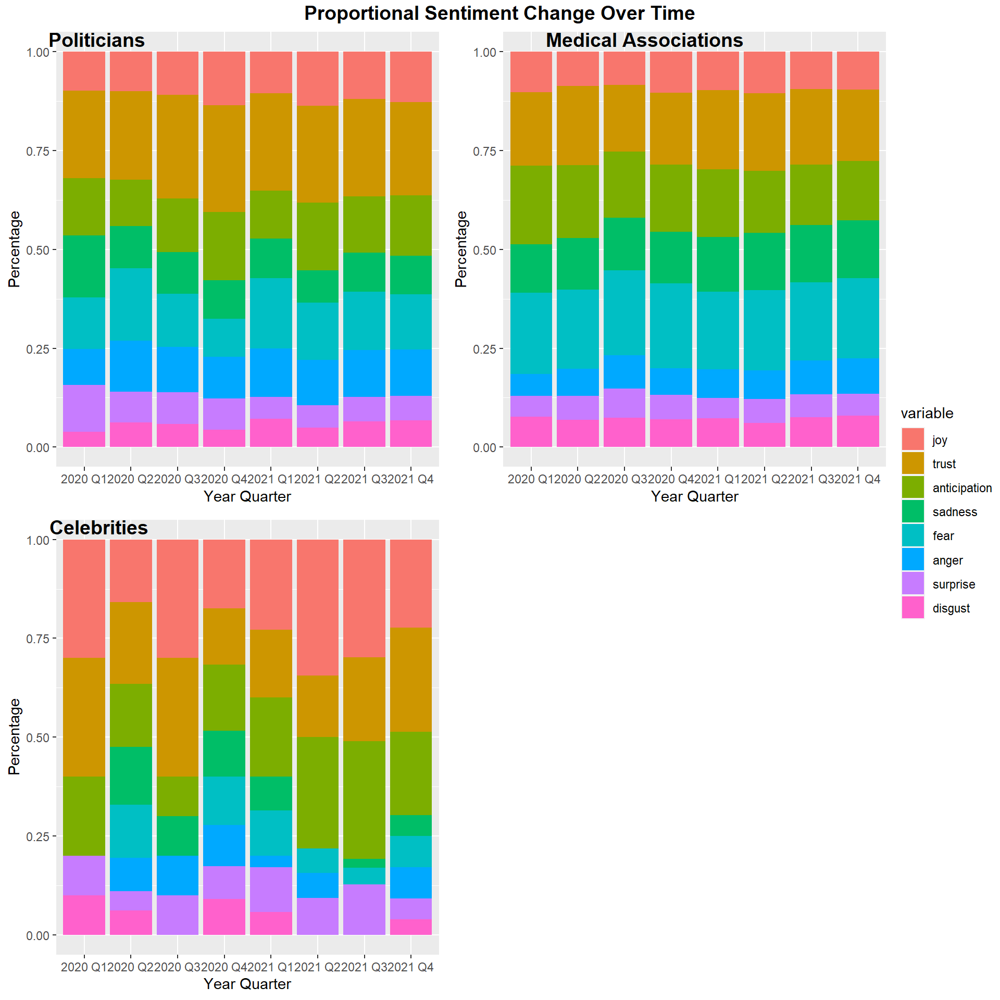

Chapter 5 Results
library(tidyverse)
library(ggplot2)
library(tidytext)
library(textdata)
library(dplyr)
library(ggpubr)
library(vcd)
library(scales)
library(ggalluvial)5.1 Data Exploration
5.1.1 The Number of Tweets for Different Groups
df <- read_csv("./resources/data_combined_filtered_sentiment.csv")
df$created_at <- as.Date(df$created_at)
# df2$date_group <-
# q1 = c
df$yearqtr <- paste(
format(df$created_at, "%Y"),
sprintf("%01i", (as.POSIXlt(df$created_at)$mon) %/% 3L + 1L),
sep = " Q")
df_qtr <- df %>% group_by(yearqtr) %>% count(group)
ggplot(data=df_qtr, aes(x=yearqtr, y=n, fill=group)) +
geom_bar(position = "dodge", stat = "identity") +
ggtitle("The number of tweets for different groups") +
labs(x = "Year Quarter", y = "# of tweets")
5.1.2 The Number of Followers for Different Groups
df_followers <- df %>% group_by(group) %>% summarise(followers_count = sum(followers_count))
ggplot(df_followers, aes(x=reorder(group, -followers_count), y= followers_count/1000000000)) +
geom_bar(stat='identity', fill="lightblue") +
scale_y_continuous(labels = comma) +
ggtitle("Twitter Followers") +
ylab("Followers Count (in billion)") +
xlab("Group") +
geom_text(aes(label=comma(followers_count)), vjust=2)5.2 What were the sentimental reactions of different groups to Covid-19 news?
- Ratio of covid-related post / total post
5.2.1 The Transitions of Sentiments (Positive/Negative) for Different Groups
date_group <- df %>% group_by(created_at, group)
avg <- date_group %>% summarise(avg_sentiment = mean(sentiment_score))
ggplot(data=avg, aes(x=created_at, y=avg_sentiment, color=group)) + geom_smooth(method = "loess", span = .5, se = FALSE)5.2.2 Mosaic Plot
df_mosaic <- df %>% mutate(type = case_when(
sentiment_score > 0.01 ~ "positive",
sentiment_score < -0.01 ~ "negative",
TRUE ~ "neutral"))
mosaic(type ~ group, direction = c("v", "h"), main = "Sentiment Results for Different Groups", df_mosaic)
5.2.3 Alluvial Diagram
sentiment <- c("joy","trust","anticipation","sadness","fear","anger","surprise","disgust")
df_alluvial <- df
df_alluvial[,sentiment][is.na(df[, sentiment])] <- 0
# df[] <- 0
df_alluvial <- df_alluvial %>%
group_by(yearqtr, screen_name, group) %>%
summarise(joy = mean(joy),
trust=mean(trust),
anticipation=mean(anticipation),
sadness = mean(sadness),
fear = mean(fear),
anger = mean(anger),
surprise = mean(surprise),
disgust = mean(disgust))
df_alluvial$dom_sentiment <- colnames(df_alluvial)[max.col(df_alluvial[,sentiment], ties.method = "first")+3]
df_alluvial %>% ggplot(aes(x = yearqtr,
stratum = dom_sentiment,
alluvium = screen_name,
label = dom_sentiment)) +
geom_alluvium(aes(fill=group)) +
geom_stratum() +
geom_text(stat = "stratum", size = 2) +
ylab("Number of Twitter Accounts") +
ggtitle("Sentiment Movement of Popular Twitter Accounts During COVID-19")
5.2.4 Stacked Barplot
df_stack <- read_csv("./resources/data_combined_filtered_sentiment.csv")
df_stack$created_at <- as.Date(df_stack$created_at)
df_stack$yearqtr <- paste(
format(df$created_at, "%Y"),
sprintf("%01i", (as.POSIXlt(df$created_at)$mon) %/% 3L + 1L),
sep = " Q")
df_stack <- df_stack %>% select(c(group, yearqtr, joy, trust, anticipation, sadness, fear, anger, surprise, disgust))
df_stack[is.na(df_stack)] <- 0
df_p <- df_stack %>% filter(group == "politicians")
df_m <- df_stack %>% filter(group == "medical")
df_c <- df_stack %>% filter(group == "celebrities")
df_p_qtr <- df_p %>% group_by(yearqtr) %>% dplyr::summarise(across(where(is.numeric), sum))
df_m_qtr <- df_m %>% group_by(yearqtr) %>% dplyr::summarise(across(where(is.numeric), sum))
df_c_qtr <- df_c %>% group_by(yearqtr) %>% dplyr::summarise(across(where(is.numeric), sum))
sent_cols <- c("joy", "trust", "anticipation", "sadness", "fear", "anger", "surprise", "disgust")
sents_p <- df_p_qtr %>%
gather(variable, value, -yearqtr)
sents_m <- df_m_qtr %>%
gather(variable, value, -yearqtr)
sents_c <- df_c_qtr %>%
gather(variable, value, -yearqtr)
plot_p <- ggplot(sents_p, aes(fill=variable, y=value, x=yearqtr)) +
geom_bar(position="fill", stat="identity") + xlab("Year Quarter") + ylab("Percentage")
plot_m <- ggplot(sents_m, aes(fill=variable, y=value, x=yearqtr)) +
geom_bar(position="fill", stat="identity") + xlab("Year Quarter") + ylab("Percentage")
plot_c <- ggplot(sents_c, aes(fill=variable, y=value, x=yearqtr)) +
geom_bar(position="fill", stat="identity") + xlab("Year Quarter") + ylab("Percentage")
figure <- ggarrange(plot_p, plot_m, plot_c,
labels = c("Politicians", "Medical Associations", "Celebrities"),
common.legend = TRUE, legend="bottom",
ncol = 2, nrow = 2)
figure
5.3 Deep dive into reactions of politicians and news media:
- Relationship between political stance and reactions
5.3.1 Transition of Sentiments for Different Political Parties
republican = c('Mike_Pence','tedcruz','marcorubio','randpaul','MittRomney')
democratic = c('BarackObama','JoeBiden','HillaryClinton','KamalaHarris','AOC')
df_politicians <- df %>% mutate (party = if_else(tolower(screen_name) %in% tolower(republican), "republican", if_else(tolower(screen_name) %in% tolower(democratic),"democratic","NA"))) %>% filter(group == "politicians")
date_group <- df_politicians %>% group_by(created_at, screen_name, group, party)
avg <- date_group %>% summarise(avg_sentiment = mean(sentiment_score))
avg <- avg %>% filter(group == "politicians")
date_range <- which(avg$created_at %in% as.Date(c("2020-10-01", "2020-12-01", "2020-07-01", "2021-04-01")))
ggplot(data=avg, aes(x=created_at, y=avg_sentiment, color=party)) +
geom_smooth(method = "loess", span = .5, se = FALSE) +
scale_x_date(date_labels = "%Y %b", date_breaks = "1 month") +
theme(axis.text.x=element_text(angle=60, hjust=1)) +
xlab("Tweet Date") +
ggtitle("Twitter Sentiments of Politicians") +
ylab("Avg. Sentiment Score") +
geom_vline(xintercept = as.numeric(avg$created_at[date_range]), color = "black", linetype = "dotdash") +
geom_text(aes(x = as.Date("2020-10-02"), y = 0.45, label = "Trump tested positive",color="republican")) +
geom_text(aes(x = as.Date("2020-12-11"), y = 0.4, label = "1st vaccine authorized",color="republican")) +
geom_text(aes(x = as.Date("2020-07-10"), y = 0.5, label = "2nd wave",color="republican")) +
geom_text(aes(x = as.Date("2021-04-21"), y = 0.5, label = "200+M vaccine administered",color="republican"))
5.4 Deep dive into correlations of key metrics and sentiments:
- Do retweet/likes/reply have any correlation with certain sentiments?